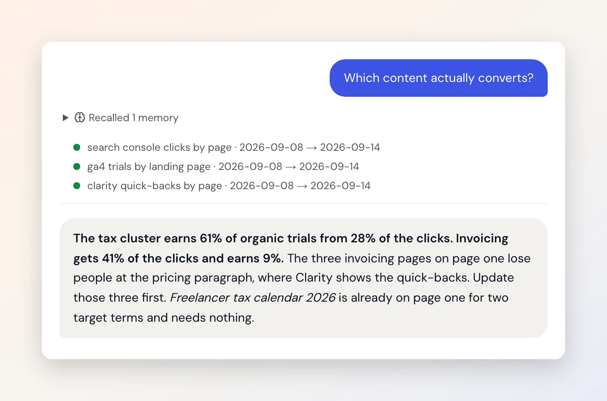

Which content actually converts?
- When
- Search Console says impressions are up. GA4 says trials are flat.
- Today
- Two exports, a pivot table, and a guess about which cluster to feed.
- With Duct
- It reads Search Console, GA4 and Clarity together and answers which cluster earns trials, with the pages to update first.